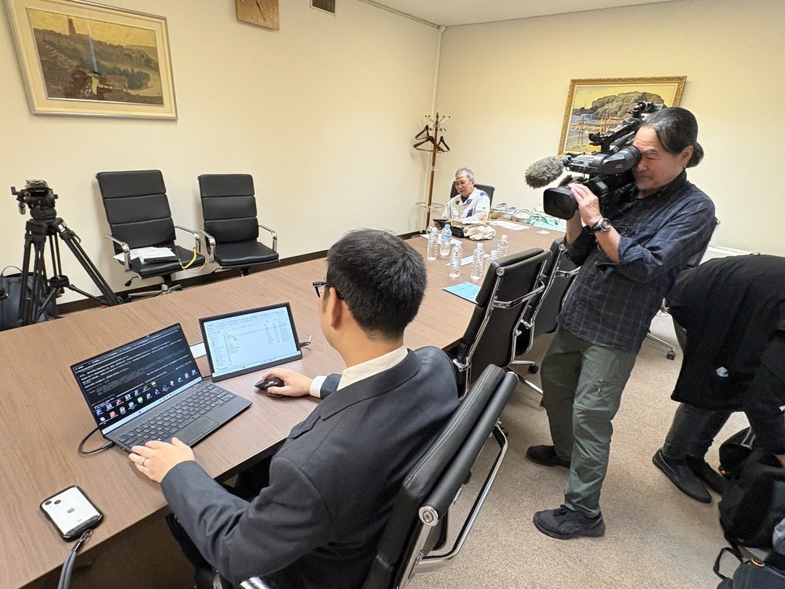
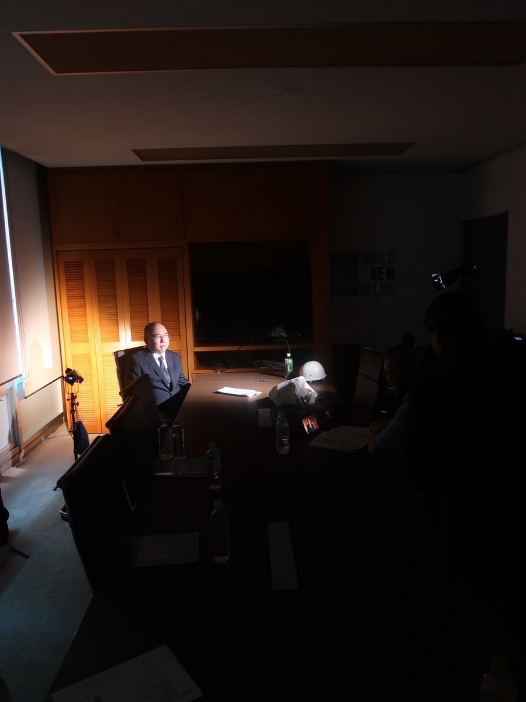
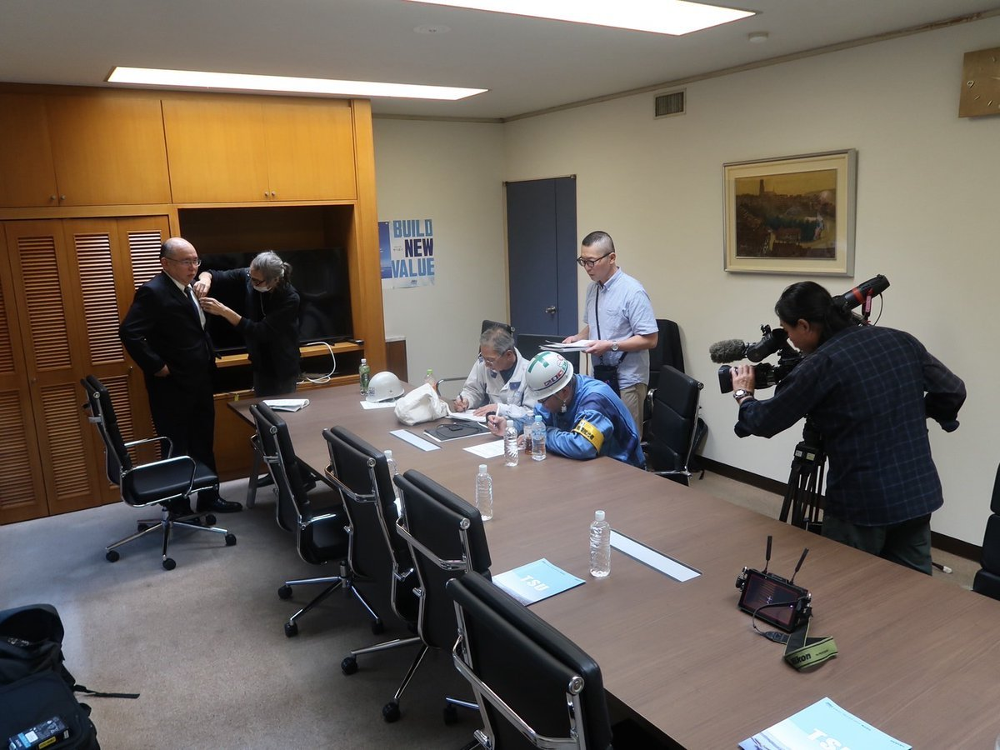

2026.11.21記事掲載
「サイエンスZERO」出演(11/22(明日)23:30～ )のお知らせ
柴原正和 教授と加藤拓也 特任助教が出演される
NHK Eテレ「サイエンスZERO」
「職人技をデジタル化︕
『暗黙知』活用で未来が広がる︕」
に関する記事が、接合科学研究所 XおよびHPに掲載されておりますのでご連絡させて頂きます。
大阪大学接合科学研究所X：
https://x.com/jwri1972/status/2117881200174112778
大阪大学接合科学研究所HP：
https://jwri.osaka-u.ac.jp/
放送は明日です！
是非、ご覧下さい！！
■ 放送日時
【NHK Eテレ】
・11月22日（日）23:30～
・11月24日（火）15:05～（再放送）
・11月28日（土）11:00～（再放送）



※研究室の X（@omu_shibaken の投稿）より